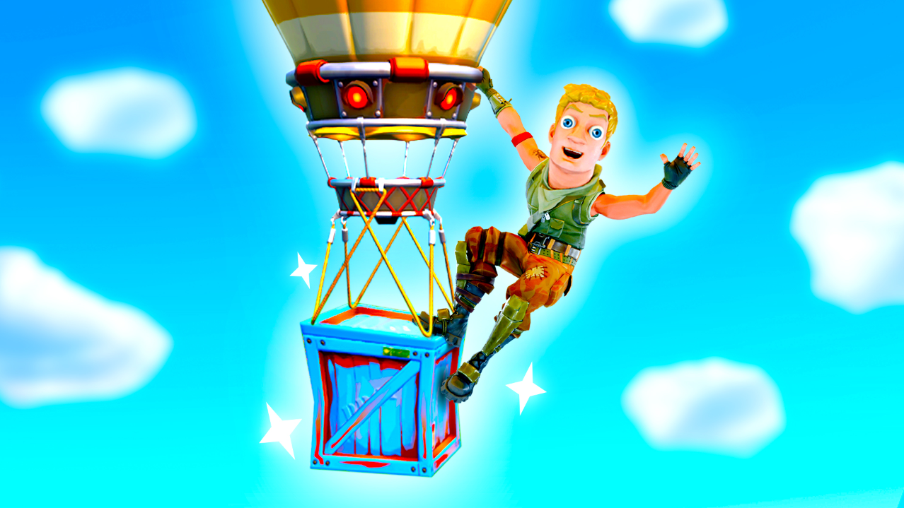
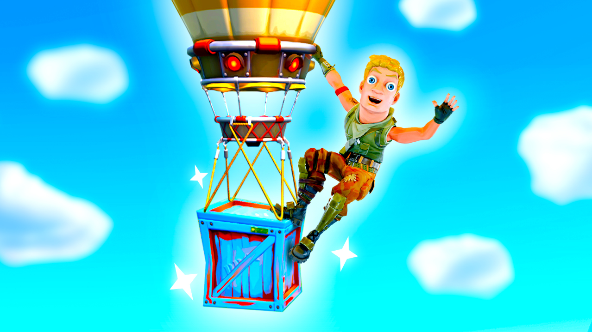
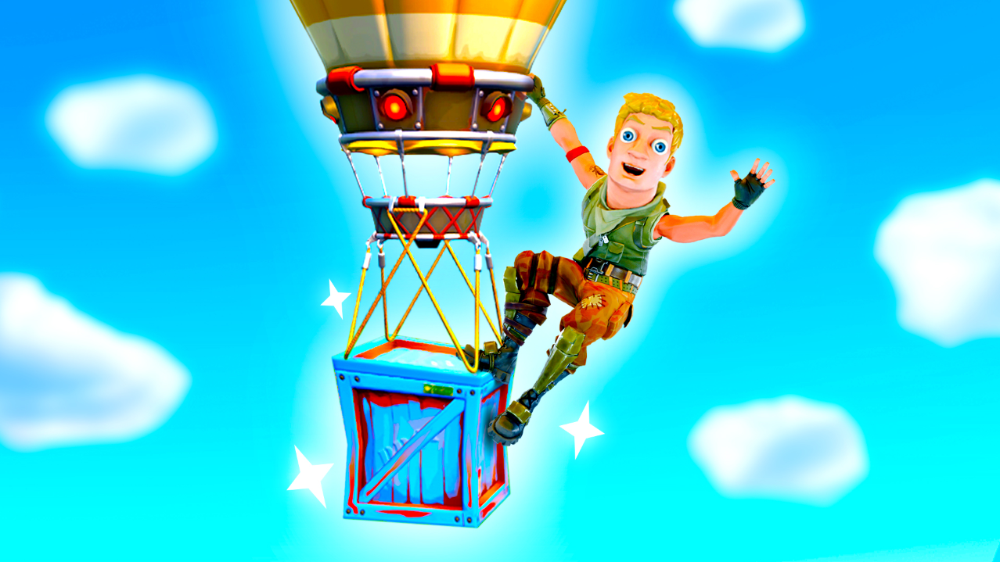

Samenwerking
UEFN Maps
Voor onze eigen Fortnite-maps ontwerp ik alle visuals, zoals logo's en thumbnails. Dit project combineert creativiteit met een commerciële aanpak.
 

Ik combineer creatief ontwerp met technische code voor digitale oplossingen.
Bekijk mijn werkIk ben Maxim Ooms. Ik ontwerp logo's, maak video's en schrijf code. Ik werk graag resultaatgericht en help anderen waar nodig om samen een project succesvol af te ronden.
Mijn aanpak is praktisch: ik leer het snelst door direct met nieuwe software aan de slag te gaan. Zo ontdek ik snel wat werkt en hoe ik het beste resultaat behaal.
Ik wil het volledige creatieve proces begrijpen. Niet alleen een mooi beeld maken, maar ook de techniek en code erachter beheersen is mijn doel.
Voor onze eigen Fortnite-maps ontwerp ik alle visuals, zoals logo's en thumbnails. Dit project combineert creativiteit met een commerciële aanpak.

Ik vertaal de wensen van klanten naar professionele logo's en illustraties. Hierbij leer ik hoe ik een concept digitaal strak kan uitwerken.
Ervaring opgedaan bij Herva, AirDeco en AdWorks. Bij AdWorks heb ik een maand lang dingen gemaakt.
Hier zie je een parfumflesje getekend met Illustrator en een boek dat ik ook in illustrator heb gemaakt
In plaats van veel theorie, kies ik voor actie. Door direct programma's zoals Figma of Da Vinci Resolve te gebruiken, leer ik de functies sneller kennen en kan ik direct creatieve oplossingen bedenken.